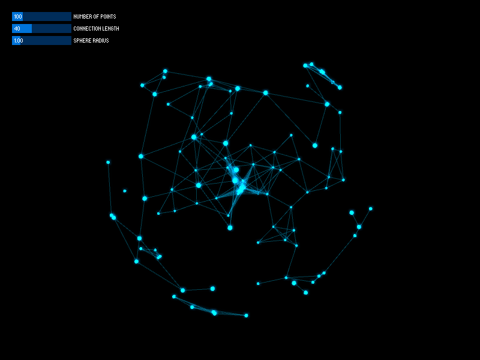
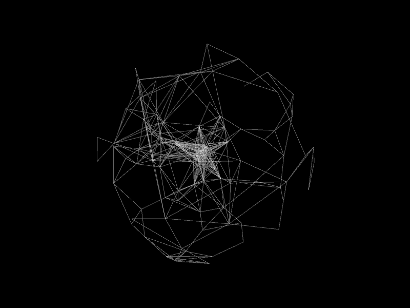
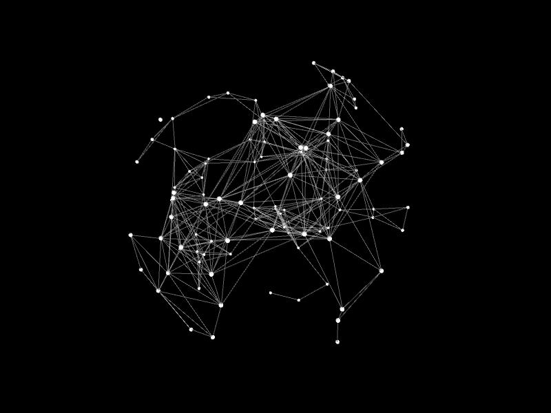
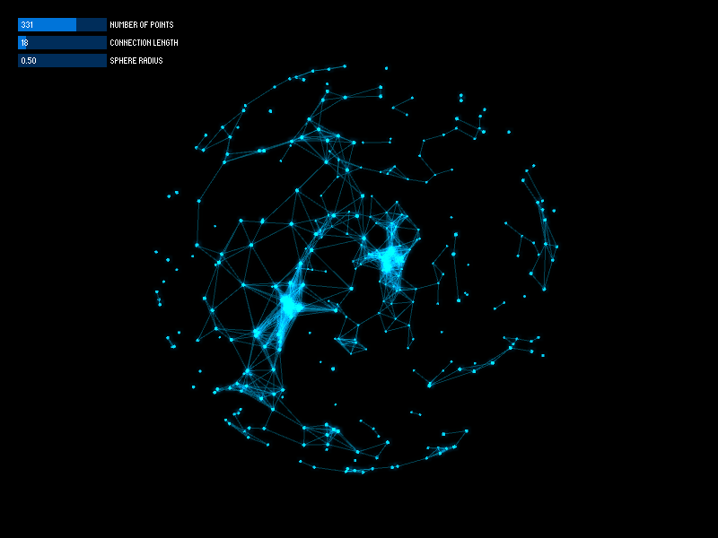
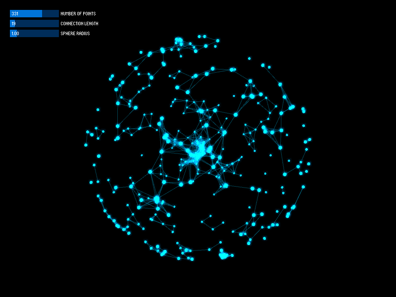
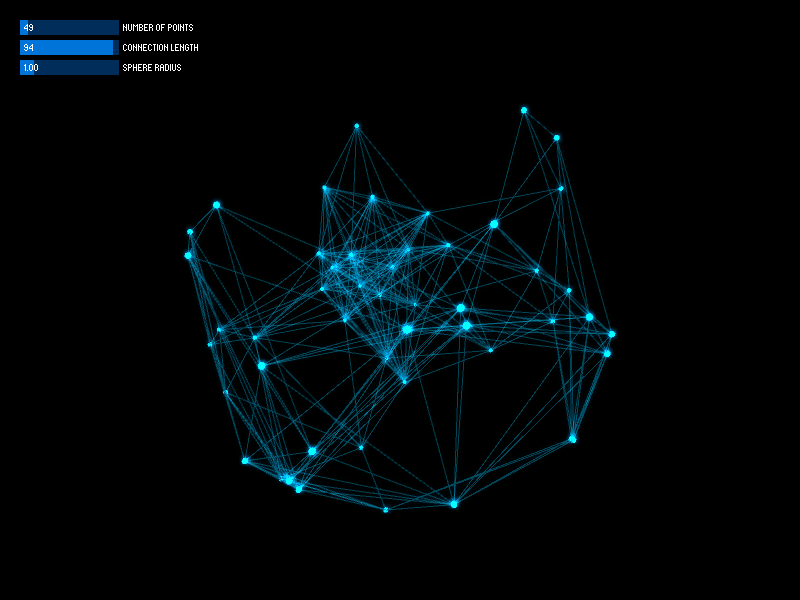
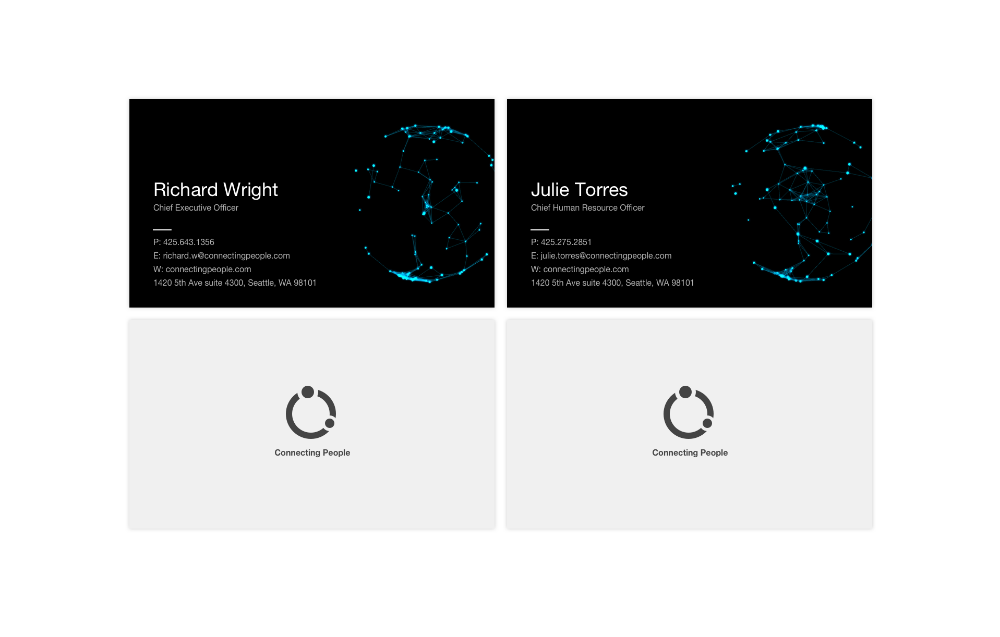

In a captivating design challenge, I delved into the realm of generative design to explore brand concepts that visually represented connections between people. This side project aimed to evoke a profound sense of unique identity and interconnectedness. Leveraging the power of Processing, I embarked on a creative journey to bring these concepts to life through visually striking patterns.
Through careful experimentation, I discovered that by manipulating various parameters, such as connection length, point size, and the number of points on the sphere, I could emphasize the underlying shape and structure of the sphere in the generated patterns. This deliberate reduction in connection length, point size, and increased point density resulted in visually compelling patterns where the sphere's form became more apparent, creating a mesmerizing visual representation of connections between individuals.
   In another example, I took a different approach by reducing the number of points and increasing the connection length. This deliberate adjustment transformed the visual patterns, giving them a distinct appearance that diverged from the previously explored designs. The versatility and flexibility of the generative design approach allowed for a wide range of visual possibilities, each conveying a unique representation of connections and relationships.
To provide an immersive experience and showcase the dynamic nature of the generative design, I recorded an interactive program in action. This captivating video demonstrates the program's ability to generate a multitude of visually stunning patterns by adjusting the parameters. The visuals come alive, offering a glimpse into the diverse visual language that can be created and the incredible potential for evoking a sense of connection and identity.
Through this design exploration, I sought to push the boundaries of visual representation, using generative design as a powerful tool to convey the essence of interconnectedness and individuality. The results not only captivate the viewer's imagination but also demonstrate the immense potential of design to evoke emotions and convey meaningful concepts.
